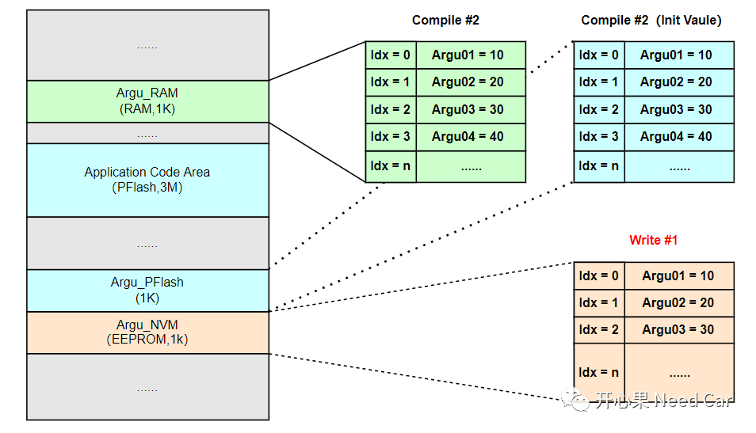
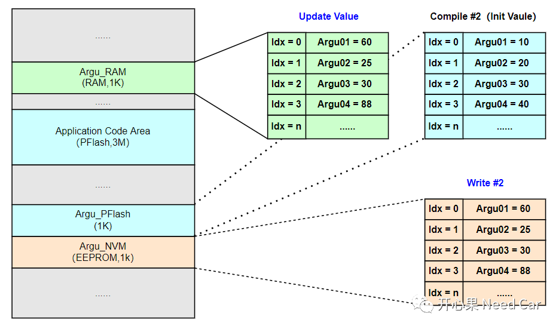
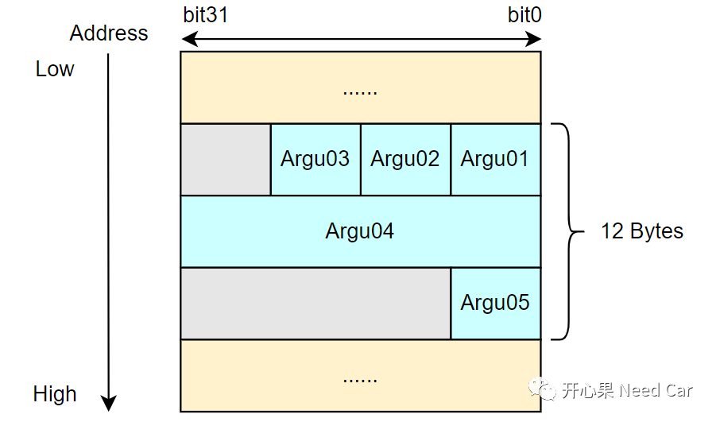
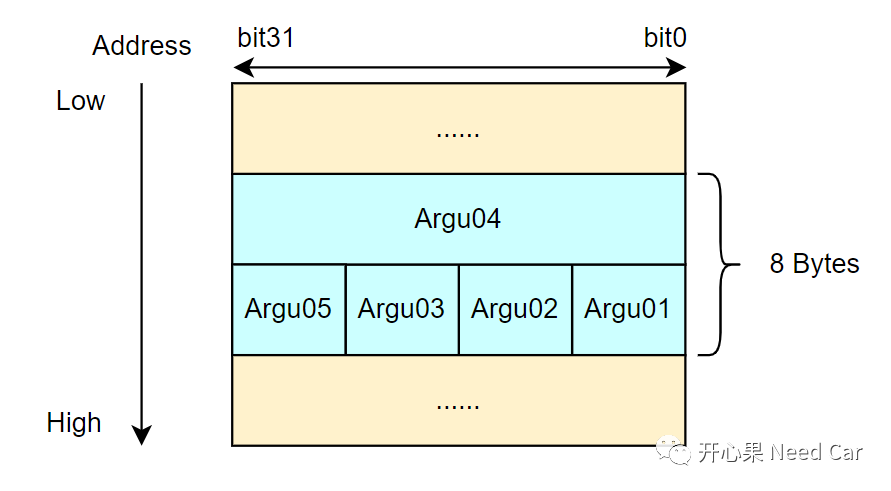

开心果 Need Car · 2022-07-04T19:53:00+08:00 · 微信原文
在工程开发问题（六）：Application程序更新，读取NVM数据异常一文中，提到Application程序更新后，如果指定存储区新增变量，编译器重新编译程序后，RAM区参数和NVM中参数对应位置会错序，也提到了项目中的一种实现方式。经过群里小伙伴的讨论，该问题的实现还有其他方式，再次分享给大家！
1、为什么选择结构体管理存储NVM的参数呢？
typedef unsigned char uint8;typedef struct{uint8 Argu01;uint8 Argu02;uint8 Argu03;}NVM_StoreArgu_Type;/* RAM Argu Value*/NVM_StoreArgu_Type NVM_ARGU_RAM_VAL = {0x00};/* PFlash Argu Init Value*/const NVM_StoreArgu_Type NVM_ARGU_INIT_VAL = {10, 20, 30};/* Copy PFlash Argu Value to RAM*/......
typedef unsigned char uint8;typedef struct{uint8 Argu01;uint8 Argu02;uint8 Argu03;uint32 Argu04;}NVM_StoreArgu_Type;/* RAM Argu Value*/NVM_StoreArgu_Type NVM_ARGU_RAM_VAL = {0x00};/* PFlash Argu Init Value*/const NVM_StoreArgu_Type NVM_ARGU_INIT_VAL = {10, 20, 30, 40};/* Copy PFlash Argu Value to RAM*/......


2、使用结构体带来的资源消耗问题
凡事有利就可能有弊，使用结构体可以解决错序问题，但是可能会带来资源消耗的问题。比如：Application新增加了两个参数需要存储到NVM，一个uint32类型参数Argu04，一个uint8类型参数Argu05。编译器在编译结构体的时候，会以元素最宽类型对齐，本例：以uint32类型宽度对齐。Argu01~Argu05我们本希望消耗8 bytes资源，实际需要消耗12 bytes。
新增数据结构如下所示：
typedef unsigned char uint8;typedef unsigned int uint32;typedef struct{uint8 Argu01;uint8 Argu02;uint8 Argu03;uint32 Argu04;uint8 Argu05;}NVM_StoreArgu_Type;/* RAM Argu Value*/NVM_StoreArgu_Type NVM_ARGU_RAM_VAL = {0x00};/* PFlash Argu Init Value*/const NVM_StoreArgu_Type NVM_ARGU_INIT_VAL = {10, 20, 30, 40, 50};/* Copy PFlash Argu Value to RAM*/......

typedef unsigned char uint8;typedef unsigned int uint32;typedef struct{uint8 Argu01;uint8 Argu02;uint8 Argu03;uint32 Argu04;uint8 Argu05;}NVM_StoreArgu_Type;/* RAM Argu Value*/NVM_StoreArgu_Type NVM_ARGU_RAM_VAL = {0x00};/* PFlash Argu Init Value*/const NVM_StoreArgu_Type NVM_ARGU_INIT_VAL = \{10, 20, 30, 40, 50};int main(){printf("NVM_ARGU_INIT_VAL Using %d bytes ! \n",\sizeof(NVM_ARGU_INIT_VAL));return 0;}
NVM_ARGU_INIT_VAL Using 12 bytes !
typedef unsigned char uint8;typedef unsigned int uint32;typedef struct{uint32 Argu04;uint8 Argu01;uint8 Argu02;uint8 Argu03;uint8 Argu05;}NVM_StoreArgu_Type;/* RAM Argu Value*/NVM_StoreArgu_Type NVM_ARGU_RAM_VAL = {0x00};/* PFlash Argu Init Value*/const NVM_StoreArgu_Type NVM_ARGU_INIT_VAL = \{10, 20, 30, 40, 50};int main(){printf("NVM_ARGU_INIT_VAL Using %d bytes ! \n",\sizeof(NVM_ARGU_INIT_VAL));return 0;}
NVM_ARGU_INIT_VAL Using 8 bytes !如上看到了资源消耗的问题，这个问题严重吗？相对于程序鲁棒性，可能我不会在意资源的消耗（资源足够的前提下），就目前主流芯片的性能来说，对于多数项目的开发都是足够的。所以，建议大家优先考虑程序的鲁棒性。
群内小伙伴有建议：“在nvm配置引用自定义结构体，block大小和结构体保持一致。”，这也是一个不错的选择。再次感谢群内小伙伴的智慧，“三人行，必有我师焉”！
对于具体的一个项目，可能存在一些“历史原因”，对具体问题修复时，可能已经无法用最恰当和常规方式解决。我的观点：只要代码经受住压力测试，它就是一个好的代码。
往期精彩回顾